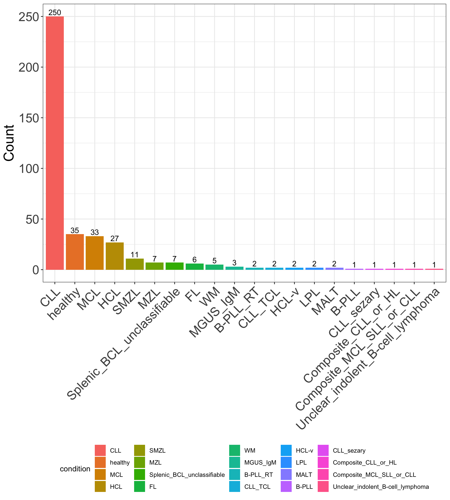
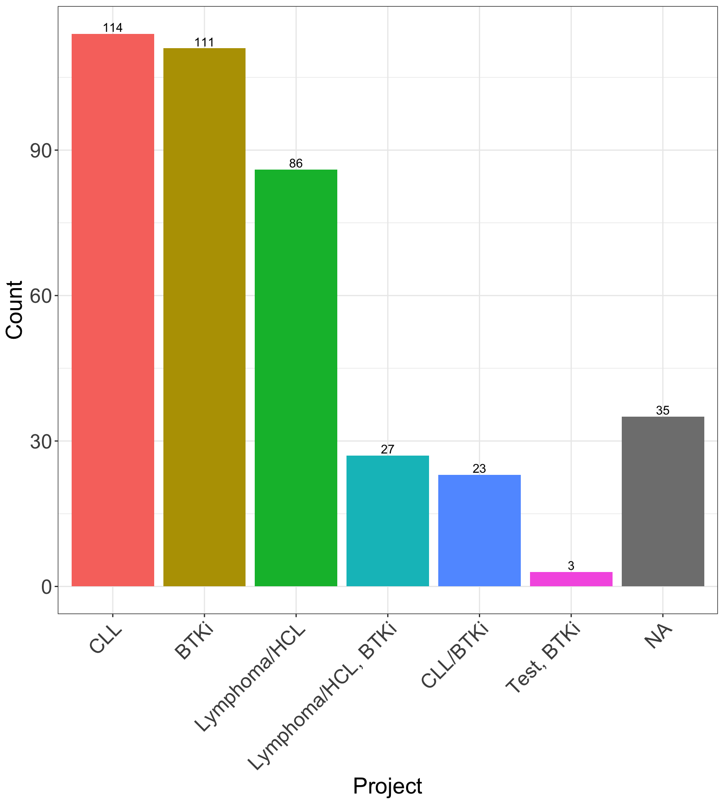

# sample annotation
smpDF <- readxl::read_excel ("data/Proteomics_o30666_samplePreparation_V3_SP.xlsx") %>%
mutate(smpID = paste0("S", `Sample ID bfabric`),
patID = PatientID,
diag = Diagnosis,
set = Project,
pelletSize = `Pellet size \r\n[1E+06 cells]`,
sampleProcessGroup = `Group for sample processing and injections`,
BTKiTimePoint = `BTKi time point`,
sampleType = Stype,
processDate = `Processing date`,
sampleID = SampleID) %>%
select(all_of(c("smpID", "sampleID", "patID", "diag", "set", "BTKiTimePoint", "sampleType", "processDate", "pelletSize", "sampleProcessGroup")))
knitr::kable(head(smpDF))| smpID | sampleID | patID | diag | set | BTKiTimePoint | sampleType | processDate | pelletSize | sampleProcessGroup |
|---|---|---|---|---|---|---|---|---|---|
| S454476 | 12PB0339 | P0453 | MZL | Lymphoma/HCL | NA | PB | 2022-02-15 | 0.5 | NA |
| S454477 | SID3079 | PID1418 | MCL | Lymphoma/HCL, BTKi | alternative untreated | PB | 2022-02-15 | 0.5 | same patient |
| S454478 | 15PB0310 | P1043 | MCL | Lymphoma/HCL | NA | PB | 2022-02-15 | 0.5 | NA |
| S454479 | 16PB0006 | P1063 | MCL | Lymphoma/HCL | NA | PB | 2022-02-15 | 0.5 | NA |
| S454480 | 14PB0373 | P0892 | MZL | Lymphoma/HCL | NA | PB | 2022-02-15 | 0.5 | NA |
| S454481 | 13PB0574 | P0710 | MCL | Lymphoma/HCL, BTKi | first, peak | PB | 2022-02-15 | 0.5 | NA |
# wrong annotation
smpDF[smpDF$sampleID == "SID2287", ]$diag <- "SMZL"
smpDF[smpDF$sampleID == "SID2503", ]$diag <- "Unclear indolent B-cell lymphoma"
# change the names
smpDF$diag <- stringi::stri_replace_all_regex(smpDF$diag,
pattern = c(" \\+ ", ", ", " \\(", "\\) ", "\\)", "\\?", "/"),
replacement = c(rep("_", 3), rep("", 3), "_or_"),
vectorize = FALSE) %>%
str_replace("\\+", "_") %>%
str_replace_all(" ", "_")
smpDF[grep("healty", smpDF$diag), ]$diag <- "healthy"
# make unique ID
smpDF <- unite(smpDF, ID, c(diag, smpID), remove = FALSE) %>%
make_unique("patID", "ID") %>%
column_to_rownames("smpID")
# investigate diagnosis and patients
diagTab <- smpDF %>% group_by(diag) %>%
summarise(Count = length(diag)) %>% arrange(desc(Count))
diagTab$condition <- factor(diagTab$diag, levels = diagTab$diag)
ggplot(diagTab, aes(x = condition, y = Count, fill = condition)) +
geom_bar(stat = "identity") +
geom_text(aes(label = Count), position = position_dodge(width = 0.9), vjust = -0.25) +
theme_bw() +
theme(legend.position = "bottom",
axis.text.x = element_text(angle = 45, hjust = 1),
axis.text = element_text(size = 18),
axis.title = element_text(size = 20),
axis.title.x = element_blank()) 
setTab <- smpDF %>% group_by(set) %>%
summarise(Count = length(set)) %>% arrange(desc(Count))
setTab$Project <- factor(setTab$set, levels = setTab$set)
ggplot(setTab, aes(x = Project, y = Count, fill = Project)) +
geom_bar(stat = "identity") +
geom_text(aes(label = Count), position = position_dodge(width = 0.9), vjust = -0.25) +
theme_bw() +
theme(legend.position = "none",
axis.text.x = element_text(angle = 45, hjust = 1),
axis.text = element_text(size = 18),
axis.title = element_text(size = 20)) 
# 2. protein annotation
diannData <- read_tsv("data/DIANN_03052023/2286262/WU288349/out-2023-04-26/diann-output.pg_matrix.tsv", show_col_types = FALSE)
geneDF <- diannData %>%
dplyr::rename(protID = Protein.Group, geneID = Genes) %>%
select(protID, geneID)
# filter control proteins
protAnno <- geneDF %>% filter(!str_detect(protID, "Y-FGCZCont"))
ctrlProts <- setdiff(geneDF$protID, protAnno$protID)